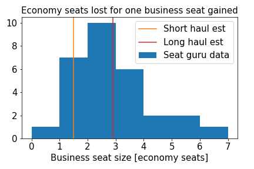
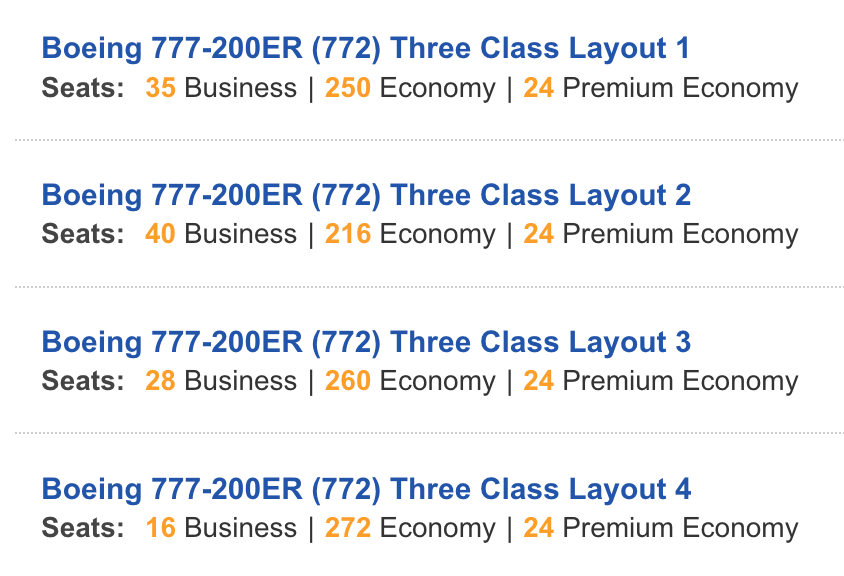

We’ve seen in the past that emissions calculators use a scaling factor to increase the amount of CO2 that a passenger is responsible for if they travel in business class. The logic is that multiple economy class seats would fit into that one upper class space. The factors typically used are 1.5 for short haul business, and 2.9 for long haul business.
Using seat guru we can gather some actual data on this question, by looking for situations where the same airline flies the same aircraft in different configurations. I only ever compared two layouts at a time - solving two equations for one unknown: one business class seat equals how many economy class seats. The distribution is shown below, and the spread is significant. The Boeing 777-200ER of Air France demonstrates both ends of the spectrum. Between layouts 1 and 2, 34 economy seats are swapped for 5 business seats (factor 6.8). Between layouts 3 and 4, 12 economy seats are swapped for 12 business seats (factor 1.0). This shows the huge uncertainty on those default factors of 1.5 and 2.9.
 Seat guru accessed 2021-05-02